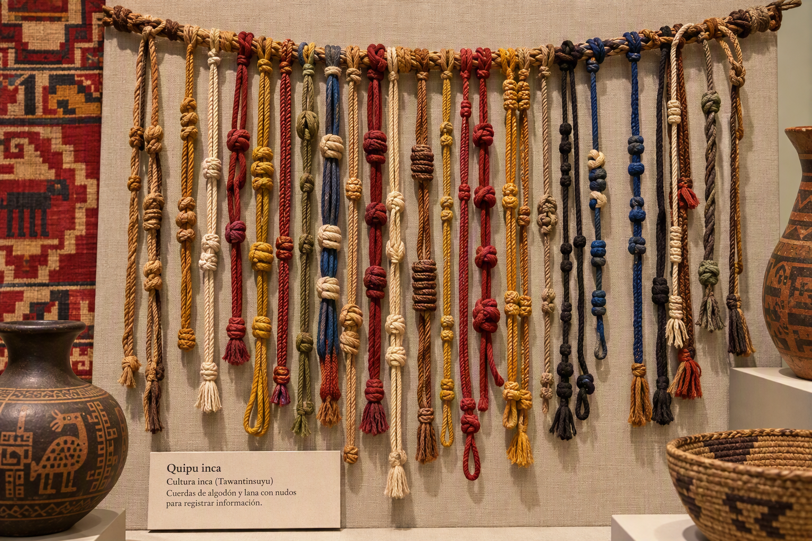
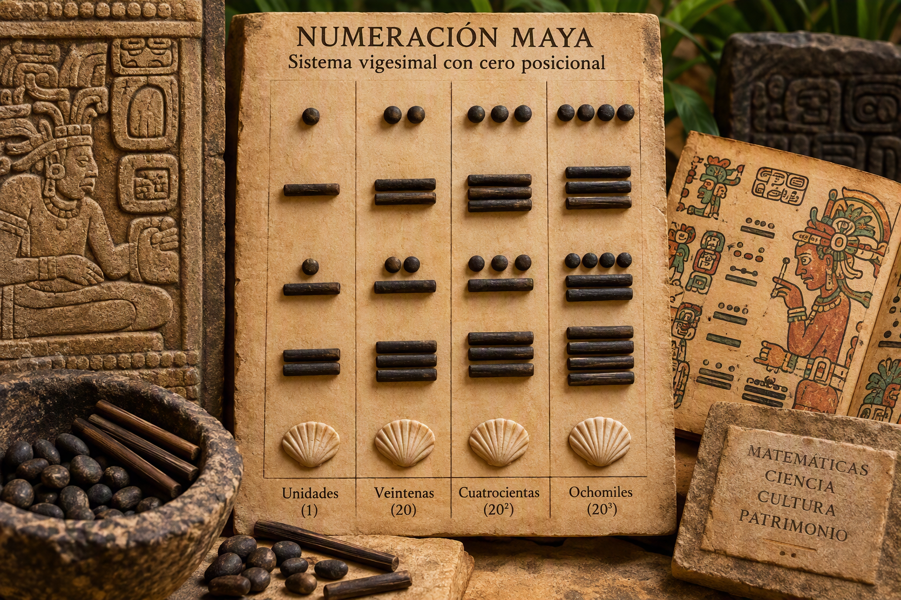
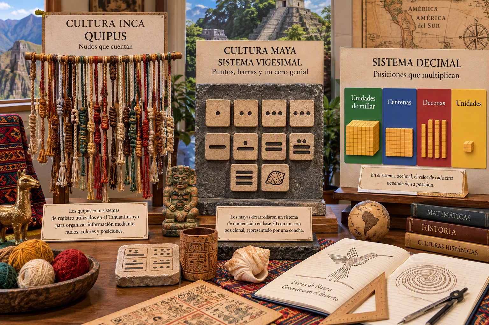
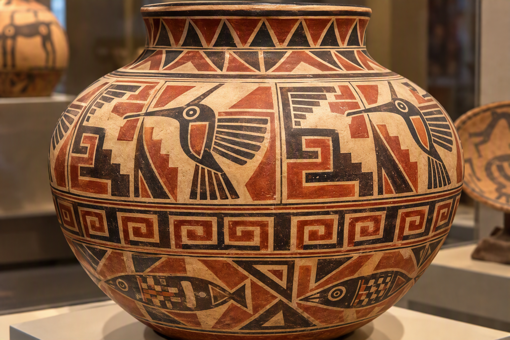

DNL · Matemáticas en español · 5 sesiones · 5 horas
Visión general
Este módulo estudia tres objetos culturales mediante un mismo enfoque: observar una fuente, construir un modelo matemático, comprobar qué permite explicar y comunicar el resultado en español. Los quipus incas introducen el valor posicional, la numeración maya conduce a la base 20 y al papel del cero, y los motivos de cerámicas nazca sirven de soporte para estudiar transformaciones geométricas actuales.
Pregunta guía:
¿Cómo representar una información numérica o geométrica cuando no se dispone de las mismas herramientas, escrituras ni necesidades sociales? A través de los quipus, los números mayas y los motivos nazca, el alumnado aprende a construir un modelo matemático, verificar sus límites y explicarlo en español.
Las cinco sesiones
1
Sesión 1 — ¿Qué es un quipu? Representar datos con un modelo escolar
60 minutos
Objetivo lingüístico:
Describir un objeto y explicar un valor posicional en español.
Descubrimiento:
El Imperio inca administró un territorio muy extenso sin escritura alfabética, utilizando quipus: cuerdas de algodón o fibra de camélido con nudos organizados en un sistema decimal posicional. Pregunta inicial: ¿cómo registrar poblaciones, tributos y circulación de bienes en un territorio andino amplio? Se presenta el papel de los quipucamayoc, especialistas encargados de registrar y transmitir información.
Fase 2 — Decodificación:
En el modelo escolar simplificado, cada posición indica un valor decimal: unidades abajo, decenas arriba y centenas en la parte superior; el número de nudos indica la cifra de esa posición. Pregunta conceptual: ¿cómo representar el cero? En el modelo escolar utilizado en clase, la ausencia de nudos en una posición indica que la cifra de esa posición es cero.
Criterio de logro observable:
Codifico y descodifico un número de tres cifras y lo compruebo con su descomposición decimal.
Evidencia para el proyecto final:
Foto o esquema del quipu, número asociado y dos frases de justificación.
Desarrollo detallado
Observar el quipu y describir solamente los elementos visibles antes de interpretar.
Localizar la cuerda principal, las cuerdas colgantes, los colores, la posición y los tipos de nudos.
Utilizar el modelo decimal escolar para codificar un número de tres cifras.
Descodificar el quipu de otro grupo y comprobarlo mediante 100c + 10d + u.
Formular una descripción, un procedimiento y un límite del modelo escolar.
Producción esperada: Un quipu escolar codificado, su descomposición decimal y tres frases explicativas.

Recurso visual con cartel en español: observa la posición, el color de las cuerdas y los tipos de nudos. Trátalo como modelo escolar, no como reproducción certificada de una pieza histórica.Vídeo en español (4 min 39 s): historia, estructura y usos de los quipus; distingue el objeto histórico del modelo decimal escolar.
Sesión 2 — ¿Cómo escribir un número con tres signos? Base 20 y cero posicional
60 minutos
Objetivo lingüístico:
Explicar una conversión con conectores cronológicos y lógicos.
Problema matemático:
En el modelo matemático estudiado en clase, la numeración maya se presenta como una escritura posicional de base 20 en la que el cero funciona como marcador de posición. Idea de partida: ¿cuántos dedos tenemos en total? Contar por veintenas ofrece una entrada concreta a una base posible, sin constituir por sí solo una explicación histórica.
Descubrimiento de símbolos:
Un punto vale 1 unidad, una barra vale 5 unidades y una concha o caracol representa el 0. El símbolo del cero permite señalar la ausencia de cantidad en una posición; esta idea es fundamental para comprender los sistemas posicionales.
Criterio de logro observable:
Convierto en ambos sentidos un número accesible y compruebo la recomposición.
Evidencia para el proyecto final:
Una conversión anotada que se conservará para el panel de la exposición.
Desarrollo detallado
Recordar los símbolos: punto = 1, barra = 5 y concha = 0.
Organizar los símbolos verticalmente según las potencias de 20: 1, 20 y 400.
Convertir un número maya a escritura decimal detallando cada producto.
Codificar un número decimal mediante divisiones sucesivas entre 20.
Comprobar por recomposición y explicar la función posicional del cero.
Producción esperada: Dos conversiones recíprocas anotadas y una frase sobre el cero posicional.

Recurso visual en español: identifica puntos, barras y cero. Lee las posiciones como 1, 20, 20² y 20³; para 20³, usa la expresión «ocho mil».Vídeo en español (22 min 11 s): puntos, barras, cero posicional, base 20 y conversiones. Selecciona el fragmento adecuado para la actividad.
Sesión 3 — ¿Qué sistema se adapta mejor a una tarea concreta?
60 minutos
Objetivo lingüístico:
Comparar, matizar y responder a una objeción en español.
Pregunta de debate:
¿qué sistema parece mejor adaptado a una tarea concreta, por ejemplo registrar una cantidad, efectuar un cálculo, transmitir información o administrar recursos? La comparación se apoya en criterios explícitos: legibilidad, economía de signos, facilidad de cálculo, portabilidad y adecuación al uso.
Grupo 1 — Defensa de los quipus incas:
Portabilidad de cuerdas y nudos, organización administrativa de un imperio extenso, sistema concreto y manipulable, con lectura ligada a la posición, el color y el contexto.
Criterio de logro observable:
Defiendo una afirmación con un criterio y un ejemplo exacto, y respondo a una objeción.
Evidencia para el proyecto final:
Tarjeta de argumento: afirmación, prueba o ejemplo y límite reconocido.
Desarrollo detallado
Definir las tareas comparadas: registrar, calcular, transportar o transmitir información.
Construir una rúbrica común con cinco criterios explícitos.
Asignar a cada grupo un sistema que defender sin afirmar que es superior en cualquier situación.
Preparar una afirmación, un ejemplo verificable, una objeción y un límite.
Realizar el debate y redactar una conclusión condicional vinculada a los usos.
Producción esperada: Una tarjeta argumentativa con tesis, criterio, ejemplo, objeción y límite.

Recurso visual en español: compara funciones y reglas. El quipu es un dispositivo de registro; la numeración maya y el sistema decimal son sistemas de numeración posicional.Vídeo en español: introducción histórica a varios sistemas de numeración. Utiliza la tabla de criterios para comparar símbolos, posición, cálculo, soporte y uso social.
Sesión 4 — Describir y crear regularidades a partir de motivos de cerámicas nazca
60 minutos
Objetivo lingüístico:
Describir una transformación sin atribuir nuestro vocabulario moderno a los artistas Nazca.
Observación inicial:
La cultura Nazca, desarrollada aproximadamente entre 100 a. C. y 650 d. C. en la costa sur del actual Perú, dejó cerámicas y geoglifos con formas de gran regularidad. Pregunta inicial: ¿qué regularidades podemos describir con las herramientas de la geometría actual?
Observación detallada:
El alumnado estudia reproducciones de cerámicas nazca con motivos repetidos. Primero identifica una unidad de repetición; después busca posibles ejes o centros de simetría y distingue una propiedad geométrica comprobable de una interpretación estética.
Criterio de logro observable:
Nombro una transformación, localizo sus elementos característicos y la justifico con una medida o un trazado.
Evidencia para el proyecto final:
Motivo anotado con transformación, elementos característicos y frase de prudencia cultural.
Desarrollo detallado
Observar un motivo y aislar la unidad mínima que parece repetirse.
Reproducirlo en una cuadrícula y registrar puntos o segmentos correspondientes.
Probar una traslación, una reflexión, una simetría central o una rotación.
Justificar la transformación mediante un trazado, una medida o la conservación de distancias y ángulos.
Crear un motivo inspirado en la observación y precisar que se trata de un análisis geométrico actual.
Producción esperada: Un motivo anotado con transformación, elementos característicos, justificación y prudencia cultural.
Recurso visual sin texto: identifica el motivo mínimo, las repeticiones, las alternancias y las simetrías locales. El análisis geométrico es un modelo actual aplicado al soporte.Vídeo en español (4 min 44 s): cerámica nazca, formas y decoración. Observa los motivos repetidos y analízalos con vocabulario geométrico actual.
Sesión 5 — ¿Cómo transmitir una idea matemática al público?
60 minutos
Objetivo lingüístico:
Reformular, preguntar y adaptar una explicación al público.
Proyecto final:
La clase reúne tres espacios temáticos a partir de las producciones preparadas durante las cuatro primeras sesiones. Según las condiciones, la mediación puede realizarse ante otra clase, en el CDI o dentro del propio grupo.
Espacio 1 — Quipus incas:
Reproducciones y modelos escolares permiten presentar el valor posicional. En una actividad breve, el visitante codifica un número sencillo y otra persona comprueba la lectura mediante una descomposición decimal.
Criterio de logro observable:
Explico una idea, propongo una tarea breve al visitante y compruebo su comprensión.
Evidencia para el proyecto final:
Guion oral final, objeto o panel asociado y autoevaluación con criterios.
Desarrollo detallado
Seleccionar una producción validada para cada uno de los tres espacios temáticos.
Convertir cada producción en un mensaje breve: objeto, pregunta, método, resultado y límite.
Preparar una actividad de uno o dos minutos para que participe el visitante.
Ensayar la explicación, prever una reformulación y una pregunta de comprobación.
Presentar, recoger una evidencia de comprensión y realizar una autoevaluación con criterios.
Producción esperada: Un espacio expositivo con soporte, mediación oral, tarea para el visitante y autoevaluación.

Recurso visual con textos en español: elige un solo soporte y prepara una idea matemática, una comprobación y una pregunta para el público.Vídeo en español: modelo metodológico de exposición oral. Analiza la estructura, los ejemplos, el vocabulario y la interacción, no el tema matemático del vídeo.